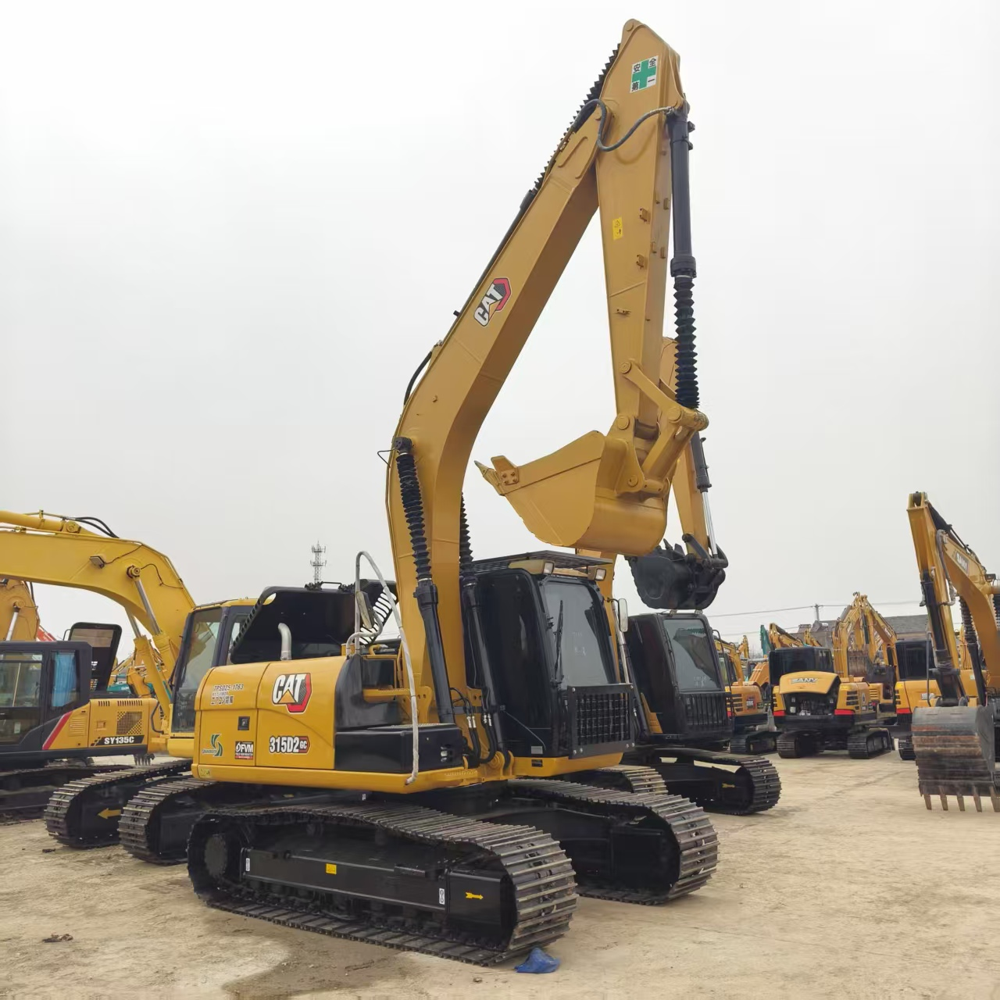

Refurbished Caterpillar Cat 315 Excavator
The Caterpillar Cat 315 Excavator is a compact, powerful machine designed to handle a variety of tasks in construction, demolition, and landscaping. As one of the best-selling models in Caterpillar’s series of mid-sized excavators, the Cat 315 is known for its reliable performance, fuel efficiency, and robust design. When refurbished, the Cat 315 offers the perfect combination of performance and cost-efficiency, making it a popular choice for businesses that need high-quality equipment at a fraction of the cost of new machinery.
Honestly, it's almost impossible to buy a brand new excavator from China. They either don't exist or are made in China. If a Chinese seller tells you their Caterpillar/Komatsu/Volvo/Kobelco/Hitachi is brand new, they're lying. Therefore, a refurbished excavator is your best bet.

Here are the detailed specifications for a refurbished Caterpillar Cat 315 excavato:
Operating Weight and Dimensions
- Operating Weight: 15,000–15,500 kg
- Transport Length: ~8.0–8.2 meters
- Transport Width: ~2.49–2.5 meters
- Transport Height: ~2.8–3.0 meters
- Tail Swing Radius: ~2.3–2.5 meters
- Track Width: 500 mm standard
- Counterweight: ~3.0 metric tons
Engine and Powertrain
- Engine Model: Cat C3.6 or C4.4 (Tier 3 or Tier 4 Final depending on build year)
- Rated Power Output: ~74–82 kW (99–110 hp) @ 2,200 rpm
- Fuel Tank Capacity: ~250–280 liters
- Travel Speed: 3.0–5.0 km/h
- Swing Speed: ~11 rpm
- Altitude Capability: Up to 3,000 m without derate
Hydraulic System
- Main Pump Type: Load-sensing, variable displacement piston pumps
- Flow Rate: ~2 × 180–200 L/min
- System Pressure: Up to 31.5–34.5 MPa
- Hydraulic Oil Capacity: ~200–250 liters
- Smart Modes:
- Auto Dig Boost
- Heavy Lift Mode
- Auto Hydraulic Warm-Up
Performance Metrics
- Bucket Capacity: 0.6–0.8 m³ (SAE heaped)
- Max Digging Depth: ~5.5–5.8 meters
- Max Reach (Horizontal): ~8.5–9.0 meters
- Max Dump Height: ~5.6–5.8 meters
- Bucket Digging Force: ~110–120 kN
- Arm Digging Force: ~80–90 kN
Cab and Operator Features
- Cab Type: ROPS/FOPS certified
- Display: LCD monitor or touchscreen (varies by build year)
- Controls: Pilot-operated or electro-hydraulic joysticks
- Comfort: Adjustable air-suspension seat, HVAC, low-noise cab
- Visibility: Panoramic glass, optional rear-view camera, LED lighting
Smart Features and Efficiency
- Technology Suite (varies by build year):
- Cat Grade with 2D
- Grade Assist
- Payload Measurement
- Work Tool Recognition
- Operating Modes: Power, Smart, ECO
- Emissions Control:
- Tier 3: mechanical injection, no aftertreatment
- Tier 4 Final: DOC + DPF + SCR
- Ambient Capability:
- High temp: up to 52°C
- Cold start: down to –18°C
Attachments Compatibility
- Standard Bucket: 0.6–0.8 m³
- Optional Tools: Hydraulic breaker, demolition shear, ripper, compactor
- Quick Coupler: Hydraulic (Cat Pin Grabber or Smart Coupler)
Refurbishment Scope
Refurbished Cat 315 units typically include:
- Engine Overhaul: Turbocharger, injectors, cooling system, emissions service
- Hydraulic Restoration: Pump recalibration, valve block testing, hose replacement
- Electrical Diagnostics: Monitor, sensors, wiring harness, telematics
- Cab Reconditioning: Seat, joysticks, HVAC, repainting
- Structural Repairs: Boom/bucket welding, bushing replacement, undercarriage rebuild
Overview of the Caterpillar Cat 315 Excavator
The Caterpillar Cat 315 is a hydraulic crawler excavator designed for a variety of tasks, including digging, lifting, and grading. With its compact size and exceptional maneuverability, the Cat 315 is ideal for projects in confined spaces or urban environments where larger machines may struggle to fit. Its high-performance hydraulic system and strong engine ensure that it can perform demanding tasks with ease, while its ergonomic design and user-friendly controls make it a favorite among operators.
Caterpillar has a long history of producing machines that combine power with fuel efficiency, and the Cat 315 is a perfect example of this. Whether you are digging trenches, moving materials, or performing precision work, this excavator offers the performance needed to get the job done efficiently.
Key Specifications of the Caterpillar Cat 315 Excavator
-
Operating Weight: Approximately 15,500 - 16,500 kg (34,200 - 36,400 lbs)
-
Engine Power: 104 - 110 hp (78 - 82 kW)
-
Max Digging Depth: Up to 6.2 meters (20.3 feet)
-
Maximum Reach: Around 9 meters (29.5 feet)
-
Bucket Capacity: Typically 0.6 - 1.0 cubic meters (21 - 35 cubic feet)
-
Fuel Tank Capacity: About 250 liters (66 gallons)
-
Travel Speed: Up to 5.4 km/h (3.4 mph)
These specifications show that the Cat 315 is a versatile and powerful machine capable of handling a wide range of tasks. Its compact size and solid performance make it ideal for projects in tight spaces or on smaller construction sites.
Performance and Efficiency of the Cat 315
The Caterpillar Cat 315 Excavator is built for high performance and fuel efficiency. With a powerful engine, a robust hydraulic system, and an operator-friendly design, the Cat 315 can take on a variety of tasks without compromising on fuel economy or overall productivity.
Performance Highlights:
-
Hydraulic Efficiency: The Cat 315 is equipped with a high-performance hydraulic system that ensures smooth and fast cycle times. This allows for quicker work completion, whether you’re digging, lifting, or grading.
-
Fuel Efficiency: The Cat 315 features advanced fuel-efficient technologies that reduce overall consumption without sacrificing power. This is particularly important for businesses looking to reduce operating costs while maintaining high levels of productivity.
-
Engine Power and Reliability: The Cat 315 features an engine designed to provide plenty of power for heavy-duty tasks, such as digging through tough materials or lifting heavy loads. The engine’s efficient operation helps to lower maintenance costs over the long term.
-
Operator Comfort: The Cat 315 offers a comfortable operator cabin with ergonomic seating, easy-to-use controls, and excellent visibility. This reduces operator fatigue and enhances productivity, particularly during long workdays.
Durability and Longevity
Caterpillar is known for manufacturing durable machines that can withstand tough working conditions, and the Cat 315 is no exception. Built with high-quality materials and components, this excavator is designed to operate in the harshest conditions while maintaining optimal performance.
Durability Features:
-
Reinforced Structure: The Cat 315 is designed with reinforced structures, including the boom, arm, and undercarriage, to ensure long-lasting durability. This is important for operators who need a machine that can withstand heavy use and tough working environments.
-
Strong Undercarriage: The undercarriage of the Cat 315 is built to handle rough terrains, ensuring stability even in uneven ground. Regular maintenance of the undercarriage ensures the machine's longevity and smooth operation.
-
Engine Reliability: Caterpillar engines are known for their longevity, and the engine in the Cat 315 is designed for long-term reliability. Proper maintenance will help extend the life of the engine and keep the machine running at peak performance.
Comfort and Safety
The Cat 315 prioritizes operator comfort and safety, making it an excellent choice for businesses focused on minimizing fatigue and maximizing productivity. The spacious operator’s cabin is equipped with adjustable seating, high-visibility windows, and user-friendly controls.
Comfort and Safety Features:
-
Ergonomic Cabin: The Cat 315 offers an ergonomic cabin designed for comfort and convenience. It features an adjustable seat, intuitive controls, and a climate-controlled environment, allowing the operator to work comfortably for extended periods.
-
Visibility: The Cat 315 features large windows and strategically placed mirrors, providing the operator with excellent visibility in all directions. This reduces the risk of accidents and enhances safety on the job site.
-
Safety Features: The Cat 315 includes several safety features, such as a ROPS (rollover protective structure) and FOPS (falling object protective structure) to protect the operator in the event of an accident. Additionally, the Cat 315 has advanced sensors that alert the operator to potential hazards, improving overall safety.
Versatility and Attachments
The Cat 315 is a versatile machine that can be fitted with a variety of attachments, making it adaptable to a wide range of tasks. This flexibility is one of the key reasons for its popularity in the construction industry.
Common Attachments for the Cat 315:
-
Buckets: The Cat 315 can be equipped with different types of buckets, such as a general-purpose bucket, heavy-duty bucket, or grading bucket, depending on the job at hand.
-
Hydraulic Breakers: A hydraulic breaker attachment allows the Cat 315 to perform demolition tasks, breaking rock, concrete, or other hard materials.
-
Augers: The Cat 315 can be fitted with an auger attachment for drilling holes in various soil types. This is particularly useful for installing posts, poles, or fencing.
-
Grapples: For handling scrap materials or logs, the Cat 315 can be equipped with a grapple attachment, allowing for precise and efficient material handling.
-
Quick Couplers: A quick coupler attachment allows operators to quickly switch between different tools without leaving the cab, enhancing efficiency and reducing downtime.
Benefits of Purchasing a Refurbished Caterpillar Cat 315 Excavator
Purchasing a refurbished Cat 315 excavator comes with several advantages, particularly for businesses looking for an affordable, high-quality solution to their equipment needs.
Key Benefits:
-
Cost Savings: Refurbished Cat 315 excavators are significantly more affordable than new models, offering excellent value for money without sacrificing performance.
-
Thorough Reconditioning: A refurbished Cat 315 undergoes a thorough inspection and reconditioning process, ensuring that any worn or damaged parts are replaced with genuine Caterpillar components. The machine is then fully tested to ensure it meets Caterpillar’s high standards.
-
Warranty: Many refurbished Cat 315 excavators come with a warranty, providing peace of mind and protection against unforeseen issues.
-
Eco-Friendly: Buying a refurbished Cat 315 helps extend the life of the machine, reducing the need for new manufacturing and contributing to environmental sustainability.
Maintenance Tips for the Caterpillar Cat 315 Excavator
To keep the Cat 315 running at its best, regular maintenance is essential. Proper care can extend the life of the machine and help prevent costly repairs down the line.
Maintenance Recommendations:
-
Engine Care: Change the oil and air filters regularly, inspect the fuel system for leaks, and ensure the cooling system is functioning properly to prevent overheating.
-
Hydraulic System: Regularly check hydraulic fluid levels and inspect hoses for wear. Clean hydraulic filters to ensure smooth operation and extend the life of the system.
-
Undercarriage: Keep the undercarriage well-lubricated and inspect the tracks for wear. Replacing worn-out undercarriage parts will ensure that the Cat 315 operates smoothly.
-
Attachments: Regularly inspect attachments for signs of wear, particularly the bucket and arm. Replace worn parts promptly to maintain optimal performance.
Conclusion
The Caterpillar Cat 315 Excavator is an excellent choice for businesses in need of a reliable, versatile, and compact machine for a wide range of tasks. With its powerful engine, efficient hydraulics, and robust construction, it is designed to perform at high levels in demanding environments. By purchasing a refurbished Cat 315, businesses can enjoy all of these benefits at a reduced cost, making it an attractive option for companies looking to maximize their equipment investment. Whether for digging, lifting, or grading, the Cat 315 will get the job done efficiently and effectively.
Our Commitment
- 2 years / 4000 hours warranty.
- EPA certified.
- No sweatshop labor.
Contacts

- [email protected]
- Youtube Instagram Facebook
- Navigation: G206 (Sishu Bridge) in Changfeng County, Hefei City, Anhui Province, 200 meters north to the east